| 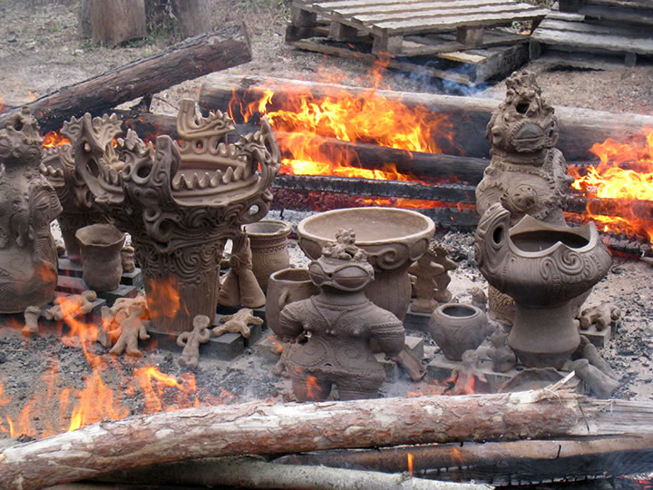 |
天気に恵まれず２週つづけて延期となった第１３回秋の縄文野焼き祭り。
それでも順延開催となった１１月７日にはスタッフが全力で野焼きにあたり、陶芸体験の方々の
土器・土偶作品など166点が見事に焼き上がりました！
| 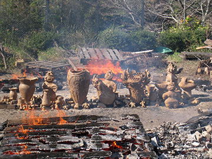 | 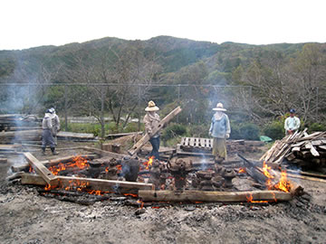 |
| 【一堂に会した166点の作品】 | |
| 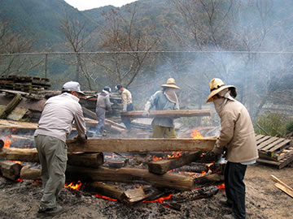 | 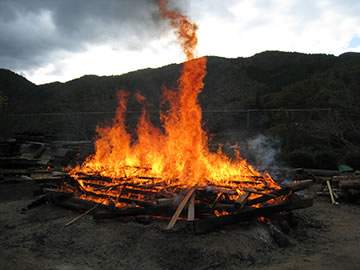 |
| 【法曽焼同好会ら野焼きスタッフの奮闘】 | 【クライマックスの攻め焚き】 |
秋晴れのすがすがしい涼風の中、どの作品もひびひとつない完璧な出来に仕上がりました。
炎のパワーが加わり明るい橙、赤茶から深い黒までの玄妙な土味の変化は野焼きならではの色調の味わいです。
| 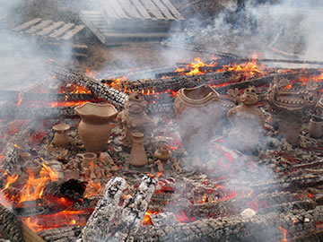 | 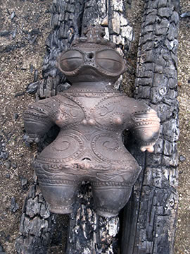 |
| 【炎の中から生まれ出る作品】 | 【遮光器土偶】 |
| 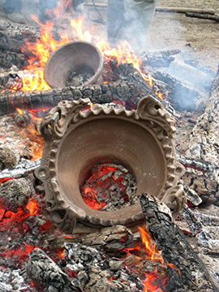 | 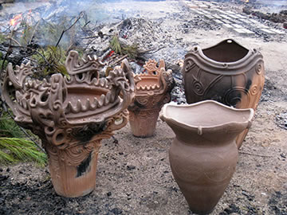 |
| 【焼き上がった土器たち】 | |
昨年に引き続き、本年も焼き上がった力作揃いの作品の中から「縄文野焼き大賞」など４賞が選ばれました。
○縄文野焼き大賞
縄文土器 土田 哲也(つちだてつや) 新見市哲西町
○縄文野焼き猪風来美術館館長賞
縄文土器 藤井 綾子(ふじいあやこ) 新見市法曽
○縄文野焼き法曽焼同好会会長賞
縄文土器 三河井 薫(みかわいかおる) 岡山市
○縄文野焼き新見市教育長賞
縄文土偶 上仲 理子(うえなかりこ) 新見市思誠小5年生
受賞された方々には賞状と、記念品として猪風来作の縄文土偶と地元特産の法曽茶が贈られました。
受賞作品は12月1日～末日の期間、猪風来美術館にて展示発表されます。
| 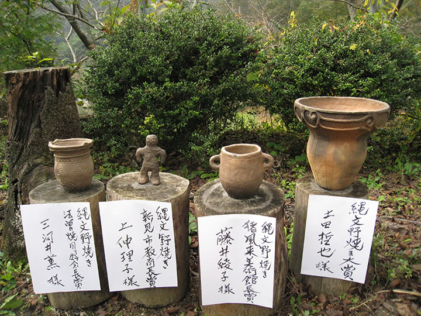 | |
| 【縄文野焼き大賞受賞作品】 |
９月のＮＨＫ・ＢＳプレミアム番組「日本美術の一万年～魂の縄文アート！土偶～」（猪風来出演）でも
注目を集めた縄文造形と縄文の精神世界。
それは東日本大震災後の復興と祈りを込めた再生のパワーに通ずるものでもあります。
縄文の原点「縄文野焼き祭り」を通じで、これからも多くの方々に縄文体験をしていただきたいと思います。
| 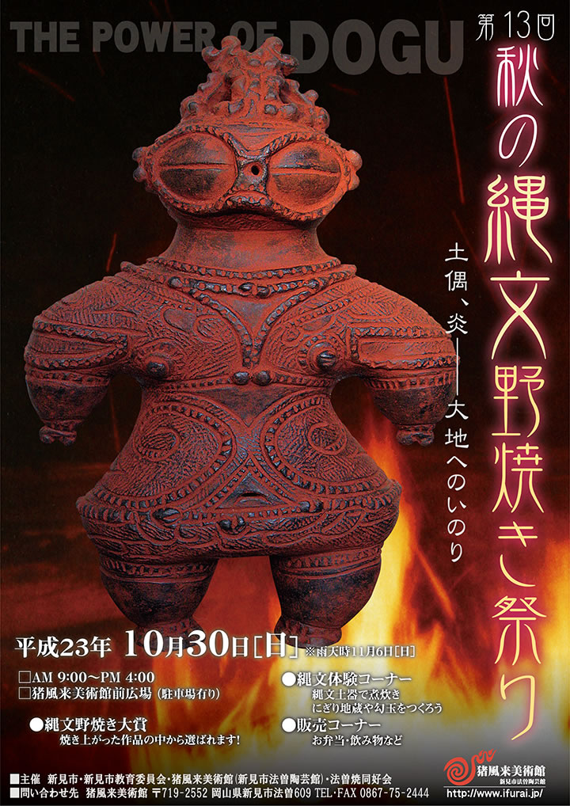 |
| 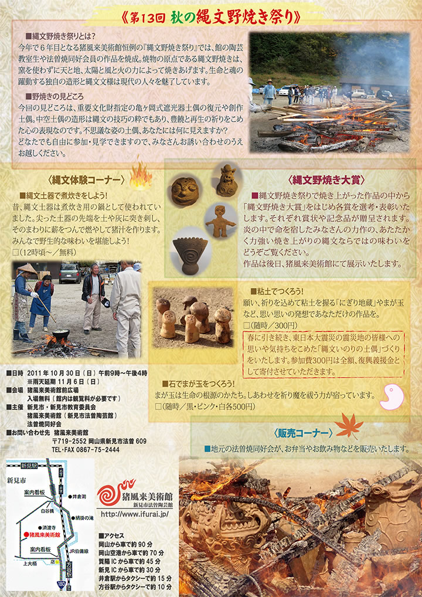 |
| 【第１３回「秋の縄文野焼き祭り」チラシ】 →（表面）PDF版を開く →（裏面）PDF版を開く |